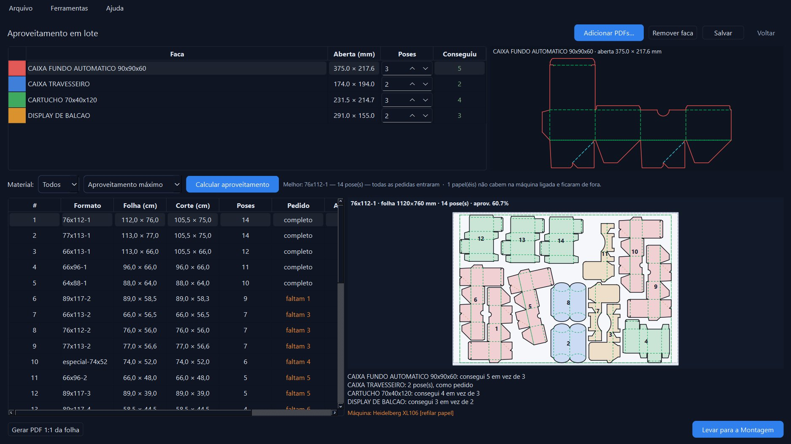
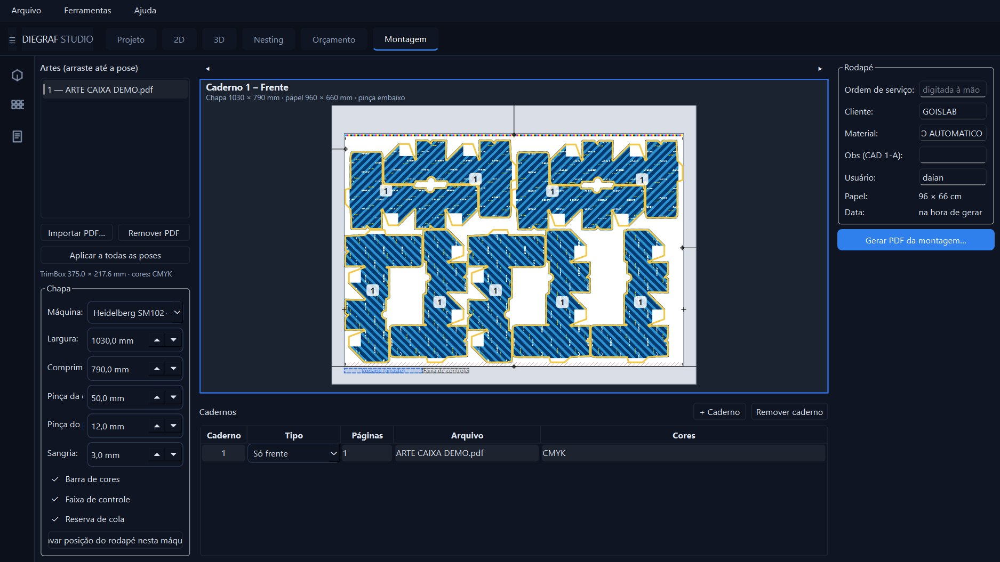
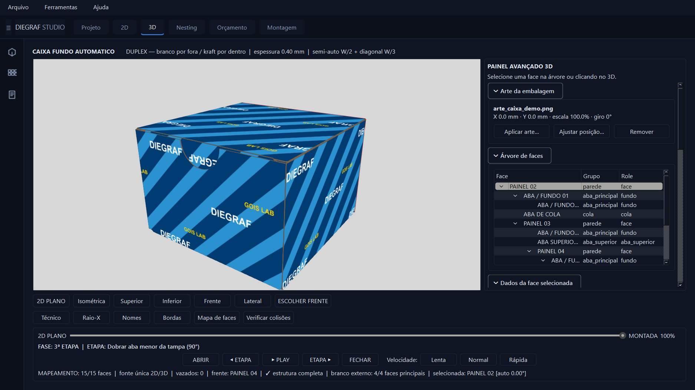
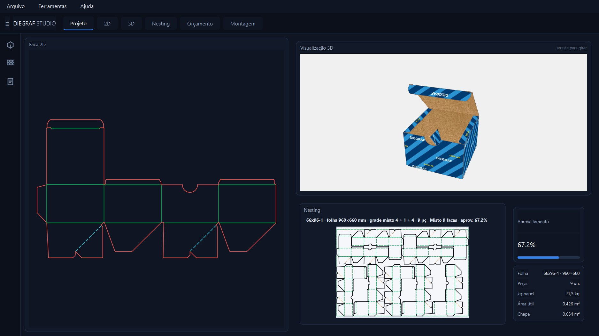
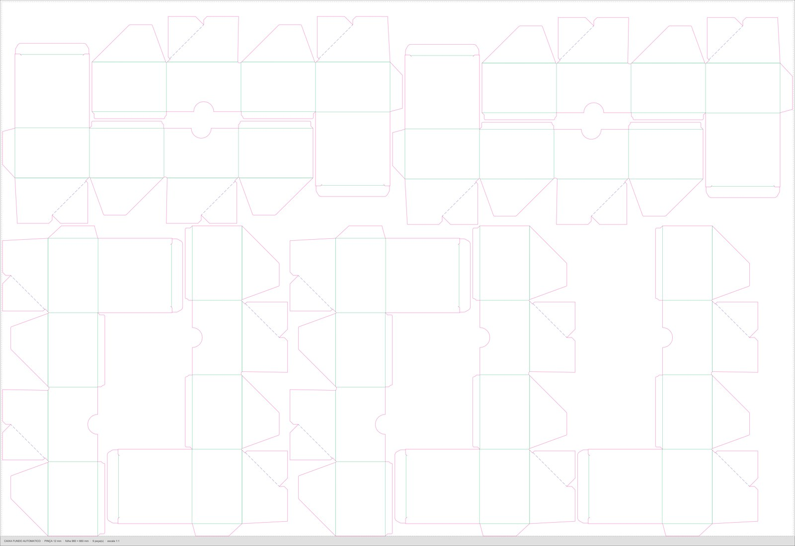

Tudo do Lite e mais quatro recursos para quem produz embalagem em escala. Telas reais do programa. Clique nas imagens para ampliar.
Junte facas de clientes diferentes na mesma folha. Diga quantas poses quer de cada uma e o programa encaixa tudo, em qualquer posição e ângulo, respeitando o espaço entre facas, as margens e a pinça.

Sobre o aproveitamento escolhido, o programa coloca a arte final em cada pose, no tamanho da chapa da máquina, e gera o PDF pronto para a gravação.

Aplique a arte sobre o mockup 3D e veja a caixa montada já impressa, antes de imprimir a primeira folha. A arte dobra junto com a caixa.

A caixa com a arte gira na tela principal, junto com a faca, a folha de impressão e os números do pedido. É a apresentação que o cliente aprova.

Exporte a folha montada em tamanho real, com todas as facas encaixadas, para a faca de corte e a produção.

Os recursos PRO ficam na interface Avançada. No Lite eles aparecem marcados e desativados, então você vê o que ganha antes de contratar.
R$ 1.000 por ano, para quem já tem o Lite. No combo Lite + PRO, R$ 2.000 na primeira compra, e a renovação antecipada sai por R$ 800.
Se não renovar, o programa continua funcionando como Lite, com tudo o que você já fez.